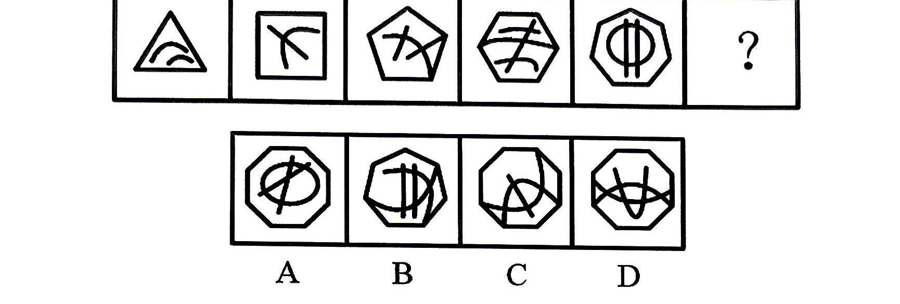
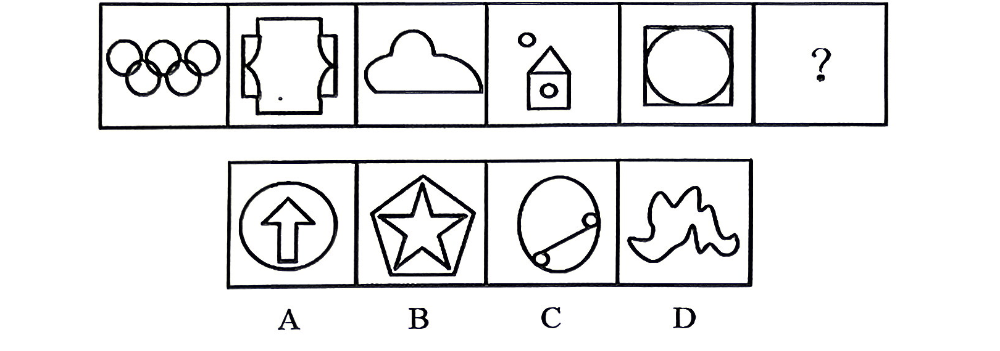
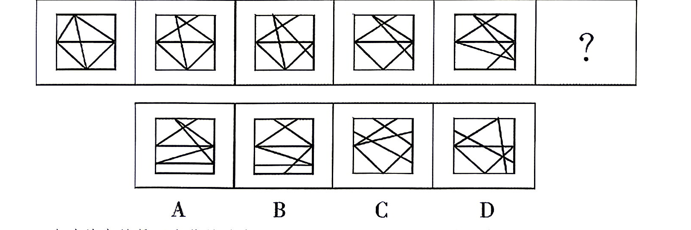
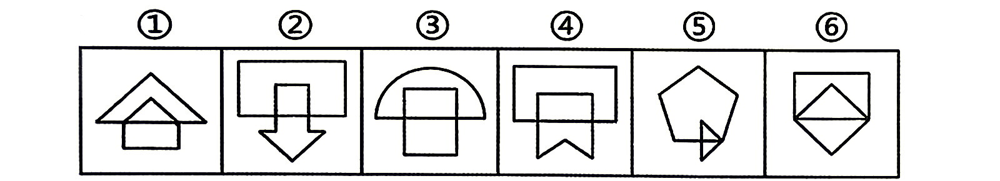
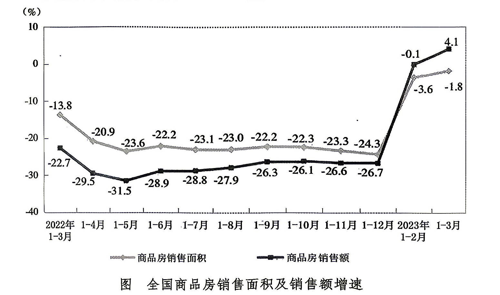
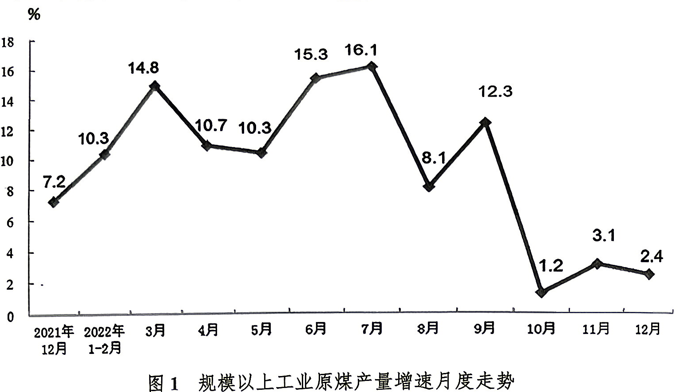
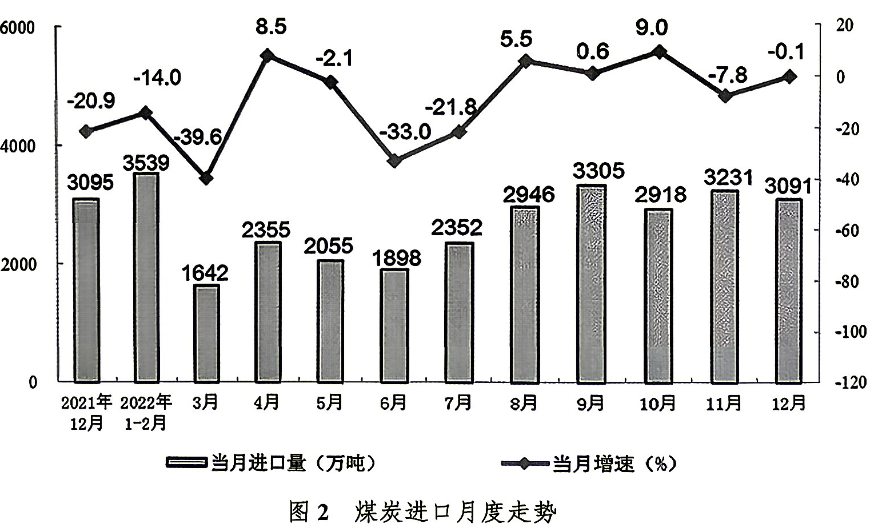
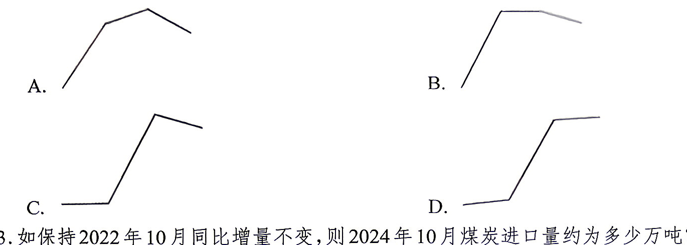
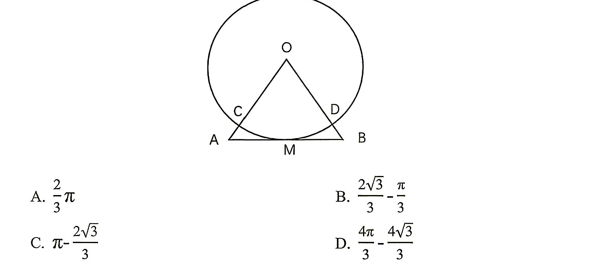

习近平经济思想是习近平新时代中国特色社会主义思想的重要组成部分。关于习近平经济思想，下列表述正确的有（）。
①进入新发展阶段是我国经济发展的历史方位
②推动高质量发展是我国经济发展的鲜明主题
③坚持新发展理念是我国经济发展的指导原则
④坚持对外开放是我国经济发展的第一动力
⑤大力发展制造业和实体经济是我国经济发展的主要着力点
A.2 项 B.3 项 C.4 项 D.5 项
基本分配制度是由我国社会主义性质和基本国情决定的。发展社会主义市场经济是我们党的一个伟大创造。下列相关说法正确的是（）。
①健全工资决定和正常增长机制，提高劳动报酬在再分配中的比重
②构建高水平社会主义市场经济体制，关键是要处理好政府和市场的关系
③分配制度是促进共同富裕的基础性制度
④要用好“看不见的手”和“看得见的手”，推动有为市场和有效政府更好结合
A.1 项 B.2 项 C.3 项 D.4 项
2026年9月12日，习近平会见印度总理莫迪。关于两国关系，下列说法错误的是()。
A.两国领导人坦诚深入交换意见，就中印要做盟友达成重要共识
B.两国领导人引领中印关系从“再出发”实现“再提升”
C.中印两国国情不同，完全可以取长补短、相互支持、彼此成就、共同发展
D.双方要以人类前途为怀、以人民福祉为念，携手推动“大金砖合作”高质量发展
2026年6月23日，《习近平党建文选》第一卷、第二卷出版发行。关于新时代党的建设总要求，下列说法正确的有（）。
①以加强党的长期执政能力建设、先进性和纯洁性建设为主线
②以党的政治建设为根基
③以坚定理想信念宗旨为统领
④以调动全党积极性、主动性、创造性为着力点
A.①④ B.②④ C.①②③ D.①②③④
《关于制定国民经济和社会发展第十五个五年规划的建议》发布，《建议》指出，要建设现代化产业体系，巩固壮大实体经济根基。下列相关说法正确的是（）。
A.现代化产业体系是物质技术基础，要构建以现代农业为骨干的现代化产业体系
B.坚持把发展经济的着力点放在数字经济上，坚持智能化、绿色化、融合化方向
C.加快建设制造强国、质量强国、航天强国、交通强国，保持服务业合理比重
D.提升产业链自主可控水平，滚动实施制造业重点产业链高质量发展行动
中共中央、国务院发布《关于推动城市高质量发展的意见》，关于城市发展，下列说法正确的有（）。
①我国城镇化正从稳定发展期转向快速增长期
②城市发展正从大规模增量扩张阶段转向存量提质增效为主的阶段
③要以坚持城市内涵式发展为主线，以推进城市更新为重要抓手
④到2030年，适应城市高质量发展的制度不断完善，现代化人民城市基本建成
A.1 项 B.2 项 C.3 项 D.4 项
中华民族伟大复兴中国梦是以习近平同志为核心的党中央提出的重大战略思想，是党和国家面向未来的政治宣言。它着眼于坚持和发展中国特色社会主义，体现了中国共产党高度的历史担当和使命追求。下列关于中华民族伟大复兴的表述正确的有( )。
①中华民族伟大复兴是共产党一切工作、一切牺牲的主题
②中华民族伟大复兴的基础工程是建设教育强国
③2020年全面建成小康社会，是全面实现中华民族伟大复兴中国梦的“关键一步”
④以中国式现代化推动中华民族伟大复兴是新征程党的中心任务之一
A.1 项 B.2 项 C.3 项 D.4 项
北京时间2026年7月27日，在韩国釜山召开的第48届联合国教科文组织世界遗产委员会会议，审议通过了中国黄(渤)海候鸟栖息地世界自然遗产边界调整项目，（）成功纳入世界自然遗产，我国黄（渤）海候鸟栖息地系列遗产继2024年后实现再次扩展。
A.江苏盐城湿地候鸟栖息地 B.上海崇明东滩候鸟栖息地 C.辽宁大连长山群岛候鸟栖息地 D.山东东营黄河口候鸟栖息地
根据《公务员法》规定，下列说法正确的是（）。
A.某副市长王某对该市一起重大矿难事故负领导责任，王某应当引咎辞去公职
B.某县交通局正科级干部刘某因渎职被给予降级处分，刘某受处分期间为12个月
C.某县水利局科员赵某因玩忽职守被给予记过处分，该处分可以口头方式通知赵某
D.某县公安局警察钱某在外兼职，该兼职必须经有关机关批准，并不得领取兼职报酬
毛泽东同志指出，中国共产党的三大优良作风是（）。
A.实事求是、群众路线、独立自主
B.武装斗争、统一战线、党的建设
C.土地革命、武装斗争、根据地建设
D.理论联系实际、密切联系群众、批评与自我批评
由于资产阶级改良派和民主革命派的大力倡导。晚清的小说创作得到了空前的发展。其中“四大谴责小说”讽刺、揭露了动乱的晚清的社会现状。关于“四大谴责小说”下列说法正确的是（）。
A.《老残游记》是中国近代第一部在报刊上连载并取得社会轰动效应的长篇章回小说
B.《官场现形记》以苏州状元金沟的经历为线索展现晚清政治文化生活的历史变迁
C.《二十年目睹之怪现状》涉及皇帝、佐杂小吏等，开创了近代小说批判现实的风气
D.《孽海花》是一部瑰玮缛丽的作品，被鲁迅称为“结构工巧，文采斐然”
政治方向是党生存发展第一位的问题，事关党的前途命运和事业兴衰成败。政治方向不明，就会走弯路，甚至________，犯颠覆性错误。因此，我们要把握政治方向，加强政治领导，夯实政治根基，涵养政治生态，防范政治风险，永葆政治本色，提高政治能力，为党和人民的事业不断从胜利走向胜利提供政治保证。
填入画横线部分最恰当的一项是：
A.离经叛道 B.南辕北辙 C.误入歧途 D.无所适从
越来越多综艺节目在展现传统文化之时，既张开怀抱拥抱年轻群体，也培养着继承传统的新生力量。________的优质国风综艺节目，让年轻群体从优秀传统文化中获得了知识养分和精神力量，助力传统文化在当今时代不断升温。当年青一代主动承担起继承与发扬传统中华文化的使命，便能让绵延上下五千年的文化血脉________发扬光大。
填入画横线部分最恰当的一项是：
A.源源不断 经久不衰 B.层出不穷 生生不息 C.屡见不鲜 薪火相传 D.此消彼长 历久弥新
相较于司法保护，环境权的行政保护具有显著优势。行政保护侧重于宏观统筹，能实现________和一体化的保护，往往更有成效；行政保护注重主动和事前干预，具有明显的________和能动性特征，能更为主动地保护环境权益。但是，环境权的行政保护并非万能，尤其是在环保部门尚处于弱势地位的当下，即使其依法行政、勤勉执政，在许多方面也是________。
填入画横线部分最恰当的一项是：
A.系统性 自主性 举步维艰 B.整体性 预防性 力不从心 C.协同性 前置性 手足无措 D.融合性 积极性 鞭长莫及
科学技术的进步必然引发军事领域的变革，生产方式的改变必然带来作战方式的调整。当前军事智能化被普遍视为实现军事突破的“金钥匙”而加速推进。但需要看到的是，有优长必然有弱点，在热议军事智能化“优势”的同时，也要充分认清当前以及在未来相当长时期内，军事智能化也有“短板”，如此才能客观、辩证、理性地看待军事智能化，也才能更有利于军事智能化“优势”的发挥和利用。
这段文字接下来最可能介绍：
A.军事智能化体现出的“优势” B.军事智能化的“劣势”所在 C.如何辩证理性地审视军事智能化 D.军事智能化利用中的“扬长避短”
据不完全统计，目前已发现的先秦有铭铜器已近两万件，时代则涵盖了商代早中期直至战国末期。以往的铭文研究对其书写或文学层面蕴含的规律与价值缺少足够的重视。事实上，在商周铭文漫长的发展历程中，其书写模式就曾有过较为复杂的演化，其修辞技巧也存在逐步提升的过程。这对于我们探讨先秦文学，特别是商代与西周文学的演进，有着极为重要的意义。而在此过程中，我们更可以通过铭文来分析当时人们思想与情感的变化。因此，________，是必要且有益的，应引起学界的关注。
填入画横线部分最恰当的一项是：
A.挖掘商周青铜器铭文中潜藏的古人所具有的人生价值观取向
B.充分了解商周时期青铜器铭文的书写如此繁盛的深层次原因
C.从书写与文学角度对商周青铜器铭文进行全面而深入的研究
D.通过研究商周青铜器铭文去揭示其蕴含的丰富的思想和情感
把活的寄生虫注射到人体内，以此激发免疫系统的“斗志”，让它们杀掉更大的敌人—癌细胞。这个听上去天方夜谭的抗癌思路，却有机会带来行之有效的抗癌疗法。刚地弓形虫是我们生活中经常接触到的一种寄生虫，它可以感染几乎所有的温血动物。20世纪60和70年代，科学家观察到感染弓形虫的小鼠对一些病原体感染和癌症的免疫力增强，因此产生了用这种寄生虫治疗癌症的想法。在此后的几十年里，越来越多的证据显示弓形虫感染有助于治疗癌症。但研究人员发现只有注射活的弓形虫才有效，使用被杀死的弓形虫对肿瘤缩小没有影响。弓形虫疫苗从临床的角度来看并不实用。关于“弓形虫治疗癌症”，
这段文字没有提及的是：
A.突出优势 B.作用机理 C.研究进展 D.应用难点
甲、乙、丙三人定期参加某培训活动，甲每隔3天去一次，乙每6天去一次，丙每隔7天去一次，三人首次于周一同时参加该培训，问第三次三人同时参加该培训是周几？（）
A.周一 B.周四 C.周六 D.周日
某快递公司有19个包裹需从网点配送至19个不同站点，公司统一使用中型货车按里程计费：5公里内收费50元，超出部分每公里加收4元。已知各站点距网点的距离恰好构成等差数列，最远的站点距网点60公里。若运费第四少的包裹付费90元，则这19个包裹的运费共需多少元？（）
A.3078 B.2850 C.2436 D.2128
某单位要采购12台办公设备，现有高、中、低三种配置可供选择，其中高配每台占用预算5万元，中配每台占用预算2万元，低配每台占用预算1万元。单位财务规定，必须选择两种配置进行采购，且预算恰好全部用完（无剩余），问共有多少种不同的采购方案？（）
A.7 B.8 C.9 D.10
某社区开展"文明家庭"评选活动，社区共有40户家庭。评选设置环境卫生、邻里和谐、热心公益三项考核指标。已知三项指标分别有35户、33户、32户家庭达标。经统计，恰好只有1项指标达标的家庭有3户。问：三项指标均未达标的家庭最多有多少户？（）
A.4 B.5 C.6 D.7
派出所位于A 地，B 地是辖区内一处治安岗亭，两地之间为一条直行道路。民警驾驶汽车从派出所出发，以54千米/小时的速度匀速驶向岗亭方向巡查。半小时后，岗亭处有两名群众甲和乙同时出发，以相同的速度分别骑行背向离开岗亭（甲沿道路走向派出所方向，乙沿道路走向远离派出所的方向）。甲步行了6千米后与汽车相遇，此后汽车又行驶了20分钟追上了乙。问：甲从岗亭骑行到派出所需要多少时间？（）
A.180 分钟 B.170 分钟 C.160 分钟 D.150 分钟
某机关单位开展“每周读书分享”活动，要求每名干部从4本指定书目和3本自选书目中确定个人阅读计划。每人须从4本指定书目中任选1～4本阅读，从3本自选书目中最多选2本阅读。若要保证至少有3人的阅读书目组合完全相同，该单位至少有多少名干部参与该活动？（）
A.25 B.133 C.169 D.181
某市开展为期4天的文明城市创建志愿服务活动，共招募了60名交通劝导志愿者和40名社区清洁志愿者。每名志愿者只参加一天的志愿服务。已知第四天（最后一天）是迎检关键日，安排的志愿者人数最多；第一天安排的志愿者中，交通劝导志愿者恰好占当天总人数的72%；第二天安排的志愿者中，社区清洁志愿者恰好占当天总人数的 85%；第三天安排的志愿者中，交通劝导志愿者比社区清洁志愿者多30%。问：第四天安排了多少名交通劝导志愿者？（）
A.6 B.12 C.20 D.26
从所给的四个选项中，选出最合适的一个填入问号处，使之呈现一定的规律性。

从所给的四个选项中，选出最合适的一个填入问号处，使之呈现一定的规律性。

从所给的四个选项中，选择最合适的一个填入问号处，使之呈现一定的规律性。

把下面的六个图形分为两类，使每一类都有各自的共同特征或规律，分类正确的一项是（）。

A.①③⑤，②④⑥ B.①④⑥，②③⑤ C.①②④，③⑤⑥ D.①⑤⑥，②③④
感知综合障碍是感知障碍的一种，是指在感知某一现实事物时，对事物的整体认知正确，但对其某些属性如形象、大小、颜色、位置、距离等产生与实际情况不相符合的感知。根据上述定义，下列最不可能属于感知综合障碍的是：
A.写字的人右手持笔，甲却认为其左手持笔 B.妻子让乙打开空调时，乙总是打开电视机 C.丙最近总觉得眼前的房屋一幢幢迎面而来 D.丁感觉自己的手特别长，能伸到隔壁院里
重要他人是指在个体社会化以及心理人格形成的过程中具有重要影响的具体人物，在教育学中分为：互动性重要他人，即学生在日常交往过程中认同的重要他人；偶像性重要他人，一般是很有影响力的人物，影响学生认同偶像性重要他人的主要因素是社会中具有某种代表性或一种典型意义的价值取向。根据上述定义，下列涉及偶像性重要他人的是：
A.小钱儿时经常听父亲讲毛主席、周总理等伟人的故事，觉得父亲博学多识，以后也想变得和父亲一样
B.小赵在初中时阅读了鲁迅的《呐喊》《朝花夕拾》等作品，十分钦佩其才华，于是立志成为一名作家
C.教授高等数学的刘教授思维敏捷、逻辑严谨，小孙被其深深折服，于是经常找机会向其请教数学问题
D.小李的姐姐不仅学历高、工作能力强，而且上得厅堂下得厨房，他觉得谁能娶到姐姐真的是三生有幸
弹簧草：琴叶榕
A.鱼腥草：臭椿 B.蜘蛛兰：灯笼果 C.茉莉花：康乃馨 D.清水圆柏：台湾杉
光合作用：二氧化碳：呼吸作用
A.化雪：热量：下雪 B.动能：自由落体：重力势能 C.放线菌：微生物：衣原体 D.还原反应：氧：氧化反应
青年 对于（）相当于（）对于 动物
A.儿童 人类 B.年轻 繁衍 C.教师 植物 D.公寓 野生
流行病学的资料数据显示——我国60岁以上的高血压的患病率为53.24%，远高于其他低年龄段的患病率，并且随着年龄的升高，发生高血压病的风险也随之增高。有人分析，这主要因为人体动脉到一定年龄会开始硬化导致阻塞，从而血流不畅，所以血压就会升高。以下各项如果为真，最能削弱题干结论？
A.我国北方多个医院接诊的青年高血压患者呈逐年上升趋势
B.遗传因素是导致患高血压的首要因素
C.不少60岁以上的老年人并未患高血压、高血脂、高血糖等病
D.年龄增长味觉退化，偏好高盐高钠饮食导致老年群体高血压多发
北京周口店山顶洞遗址是中国目前出土装饰品最早的遗址，山顶洞遗址中出土的装饰品与欧亚大陆西部尤其是西伯利亚阿尔泰地区距今4.5万至4万年的装饰品在种类和形态上具有较多相似之处，如多以穿孔的鹿类和小型食肉类动物的犬齿作为装饰品、存在骨管和串珠装饰品等。专家据此推测，山顶洞人与西伯利亚地区的早期现代人人群有着更加紧密的文化联系。为使以上结论成立，以下哪项必须为真？
A.山顶洞遗址中的人类化石与西伯利亚地区的早期现代人的化石具有相近的形态特征
B.西伯利亚的早期现代人生活在距今约4.5万-4万年，山顶洞人生活在距今4.5万年前至3.4万年
C.对周口店山顶洞人的化石进行DNA研究后发现其与西伯利亚地区的早期的某些人群具有一定程度的联系
D.装饰品是远古人类进行人群识别和信息交换的媒介，相同的装饰品类型暗示着不同群体间存在着紧密联系
今年联赛决赛的最后4支队伍是甲、乙、丙和丁。其中N与T分别为甲队和丁队的主教练。有人指出，甲队此前每次夺该项桂冠的赛季都曾战胜过T教练所在的球队；过去4年间，丁队在N教练的指导下，每隔一年都能夺得该项桂冠，而去年丁队没有夺冠。以下哪项如果为真，与上述表述相矛盾？
A.T教练可能执教过丁队 B.N教练去年曾执教丁队 C.甲队曾4次夺得该项冠军 D.丁队前年未获得该项冠军
某市宣传部举办为期一周的专题讲座，讲座时间是周一到周六，一共有四个专题，分别是：宏观政策、社情调查、网络办公以及文化传播。已知一天只能安排一个专题讲座，再加上要考虑教师的时间安排，此次讲座在总体上必须满足以下条件：(1)每个专题至少进行一次；（2）每个专题不能连续进行两次；（3）宏观政策专题不能放在周二进行；（4）文化传播专题或者放在周三或者放在周五，也可能这两天都是文化传播专题；（5）社情调查专题放在周二时，文化传播专题就不放在周五。根据这样的要求，从周一到周六的讲座专题可以排列为：
A.宏观政策，社情调查，文化传播，网络办公，宏观政策，宏观政策
B.宏观政策，网络办公，社情调查，文化传播，网络办公，社情调查
C.宏观政策，社情调查，文化传播，网络办公，文化传播，宏观政策
D.网络办公，社情调查，文化传播，宏观政策，网络办公，宏观政策
英国剑桥大学专家称，早期人类的大脑比现代人类更大，而且现代人类比早期人类身材矮小10%。这项研究颠覆了此前的理论--现代人类伴随着进化变得更高、更强壮。科学家称，这种人类进化衰减性出现在过去一万年左右，很可能是由于农业的出现导致的，农业耕作出现之后，人类受限于食物种类的减少以及疾病的蔓延，所以出现了进化衰减现象。以下哪项如果为真，最不能质疑研究人员的假设？
A.据研究，人类大规模农业耕作出现在5000年前
B.一万年前，居住在非洲的人身材和现代人类差不多
C.随着农业水平的提高，人类的食物种类远多于一万年前
D.早期人类患病没有办法医治，身残体弱者在进化中均遭到淘汰
2023 年一季度全国规模以上文化及相关产业企业相关指标情况
表 2023 年一季度全国规模以上文化及相关产业企业相关指标情况（数值据原表逐格核对）
| 指标 | 绝对额（亿元） | 比上年同期增长（%） |
|---|---|---|
| 营业收入 | 28816 | 4.0 |
| 按行业类别分 | ||
| 新闻信息服务 | 3674 | 12.5 |
| 内容创作生产 | 6456 | 5.8 |
| 创意设计服务 | 4499 | 3.9 |
| 文化传播渠道 | 3746 | 14.0 |
| 文化投资运营 | 126 | 12.1 |
| 文化娱乐休闲服务 | 342 | 48.5 |
| 文化辅助生产和中介服务 | 3519 | -4.6 |
| 文化装备生产 | 1346 | -7.9 |
| 文化消费终端生产 | 5108 | -2.4 |
| 按产业类型分 | ||
| 文化制造业 | 9483 | -4.6 |
| 文化批发和零售业 | 5028 | 5.1 |
| 文化服务业 | 14305 | 10.2 |
| 按领域分 | ||
| 文化核心领域 | 18843 | 8.8 |
| 文化相关领域 | 9973 | -3.9 |
| 按区域分 | ||
| 东部地区 | 22320 | 4.6 |
| 中部地区 | 3781 | -0.1 |
| 西部地区 | 2464 | 5.0 |
| 东北地区 | 251 | 6.0 |
| 利润总额 | 2043 | 38.1 |
| 资产总计（季末） | 183063 | 6.2 |
注：1.表中速度均为未扣除价格因素的名义增速；2.表中部分数据因四舍五入，存在总计和分项合计不等的情况。
2023年一季度末全国规模以上文化及相关产业企业资产总计约同比增长了多少亿元？
A.10687 B.11352 C.12579 D.13677
关于2023年一季度全国规模以上文化及相关产业企业，下列说法正确的是哪几项？
①内容创作生产的营业收入增长贡献大于创意设计服务
②东、中、西三地区营业收入整体增长率为4.1%
③收入最高的两个行业，其平均收入高于5600亿元
A.① B.①② C.②③ D.①③
图 全国商品房销售面积及销售额增速（保留卷面原图）

表 1 2023 年 1-3 月份东中西部和东北地区房地产开发投资情况（数值据原表逐格核对）
| 地区 | 投资额 （亿元） | 住宅 | 同比增长 （%） | 住宅 |
|---|---|---|---|---|
| 全国总计 | 25974 | 19767 | -5.8 | -4.1 |
| 东部地区 | 15222 | 11241 | -3.4 | -1.4 |
| 中部地区 | 5373 | 4385 | -6.3 | -4.8 |
| 西部地区 | 4937 | 3797 | -12.3 | -10.7 |
| 东北地区 | 442 | 345 | -3.4 | -4.6 |
表 2 2023 年 1-3 月份东中西部和东北地区房地产销售情况（数值据原表逐格核对）
| 地区 | 商品房销售面积 绝对数（万平方米） | 同比增长 （%） | 商品房销售额 绝对数（亿元） | 同比增长 （%） |
|---|---|---|---|---|
| 全国总计 | 29946 | -1.8 | 30545 | 4.1 |
| 东部地区 | 12439 | 2.4 | 18013 | 9.3 |
| 中部地区 | 8326 | -8.1 | 5988 | -6.7 |
| 西部地区 | 8325 | -3.2 | 5893 | 0.2 |
| 东北地区 | 856 | 22.6 | 650 | 18.4 |
2022年4-12月，全国商品房销售面积当月增速大于当月累计增速的有几个月份？
A.2 B.3 C.4 D.5
2022年1-3月份中部地区房地产投资额占全国的比重约为（）
A.17.7% B.18.3% C.19.5% D.20.8%
图 1 规模以上工业原煤产量增速月度走势（保留卷面原图）

图 2 煤炭进口月度走势（保留卷面原图）

注：图 2 中柱状为当月进口量（万吨），折线为当月增速（%）
下列折线图，符合2022年6~9月各月煤炭进口环比增量的变化趋势的是（）？

如保持2022年10月同比增量不变，则2024年10月煤炭进口量约为多少万吨？（）
A.2144 B.3400 C.3550 D.3620
2022年3-12月份，煤炭进口变化幅度最大的月份其进口量是变化幅度最小月份的多少倍？（）
A.0.53 B.0.80 C.1.21 D.1.88
下列表述不正确的是（ )?
A.2022年规模以上工业原煤产量月度增速大于11%的月份最多有5个
B.2022年3-12月规模以上工业原煤产量月度增速均大于煤炭进口月度增速
C.2022年下半年煤炭月均进口量不足3000万吨
D.2022年一季度规模以上工业原煤产量增速高于四季度
2022 年 1—8 月份，全国规模以上工业企业实现利润总额 55254.0 亿元，同比下降 2.1%。
1—8 月份，规模以上工业企业中，国有控股企业实现利润总额 19011.0 亿元，同比增长 5.4%；股份制企业实现利润总额 40623.6 亿元，增长 0.8%；外商及港澳台商投资企业实现利润总额 12797.0 亿元，下降 12.0%；私营企业实现利润总额 14955.5 亿元，下降 8.3%。
1—8 月份，采矿业实现利润总额 11246.8 亿元，同比增长 88.1%；制造业实现利润总额 40777.2 亿元，下降 13.4%；电力、热力、燃气及水生产和供应业实现利润总额 3230.1 亿元，下降 4.9%。
1—8 月份，在 41 个工业大类行业中，16 个行业利润总额同比增长，25 个行业下降。主要行业利润情况如下：煤炭开采和洗选业利润总额同比增长 1.12 倍，石油和天然气开采业增长 1.11 倍，电气机械和器材制造业增长 20.9%，化学原料和化学制品制造业增长 5.0%，专用设备制造业下降 1.8%，有色金属冶炼和压延加工业下降 6.6%，通用设备制造业下降 10.3%，纺织业下降 14.1%，石油、煤炭及其他燃料加工业下降 58.5%。
8 月末，规模以上工业企业资产总计 150.99 万亿元，同比增长 9.6%；资产负债率（即负债与资产的比率）为 56.8%，同比提高 0.2 个百分点。
2022年1-8月份，下列规模以上工业企业实现利润总额同比增量排序正确的是( )?
A.国有控股企业>股份制企业>外商及港澳台商>私营企业
B.国有控股企业>股份制企业>私营企业>外商及港澳台商
C.股份制企业>国有控股企业>外商及港澳台商>私营企业
D.股份制企业>国有控股企业>私营企业>外商及港澳台商
2021年1—8月，采矿业实现利润总额占全国规模以上工业企业的比重约为( )?
A.20.5% B.18.3% C.13.7% D.10.6%
2022年1—8月份，纺织业利润总额增速比煤炭开采和洗选业（）？
A.低 126.1个百分点 B.低97.9个百分点 C.高126.1个百分点 D.高97.9个百分点
2021年1—8月份，电力、热力、燃气及水生产和供应业月均实现利润约（）百万元？
A.425 B.3397 C.40500 D.42500
根据材料，下列表述可以推出的是（）？
A.2022年1一8月份，在41个工业大类行业中利润总额下降最快的是石油、煤炭及其他燃料加工业
B.2022年8月末规模以上工业企业负债同比增速为9.0%
C.2022年1-8月份石油和天然气开采业利润总额比去年同期翻了一番多
D.2021年1-8月份，全国规模以上工业企业实现利润约为 54118 亿元
某酒店有150个房间，若房价定为240元/天，每天入住率为60%，如果降低房价，则5每降低10元，房间入住率就提高4个百分点。若酒店每日收入均实现最大化，那么酒店收入达到50万元最少需要多少天？（）
A.20 B.21 C.22 D.23
某街道办事处计划安排60名工作人员，用35天时间完成辖区全部老旧小区的摸底排查工作。工作8天后，因系统升级5天无法录入数据，恢复工作后抽调6人去支援其他紧急任务，剩余人员的工作效率提升了20%，最终完成了全部排查任务。问：实际完成时间比原计划（）？
A.提前3天 B.提前 2天 C.延迟3天 D.延迟 2天
如下图所示，有一个圆心为O、直径为4米的圆形场地，依托该场地规划出一片等边三角形OAB的区域，该三角形的底边AB与圆形场地相切，切点为M。两条边AO、BO分别与圆形场地交于点C和点D。求扇形 OCD 与图形BDM 的面积差多少平方米？（ ）
